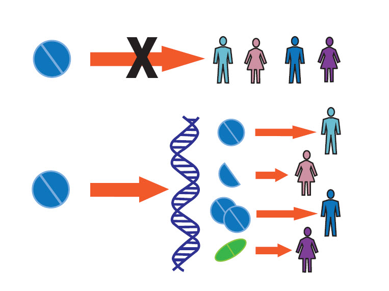
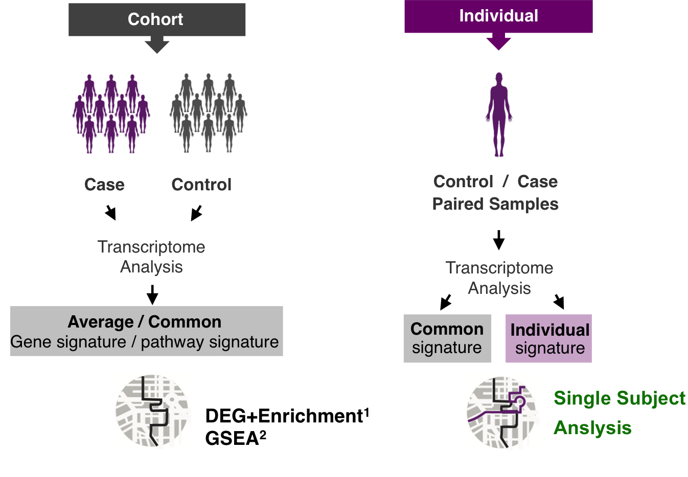
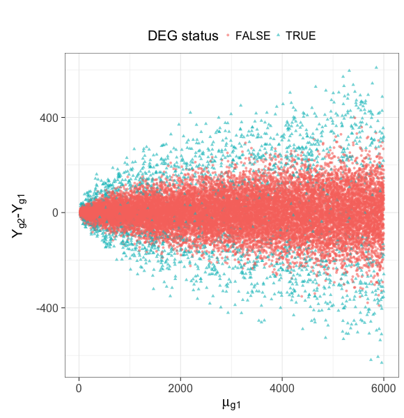
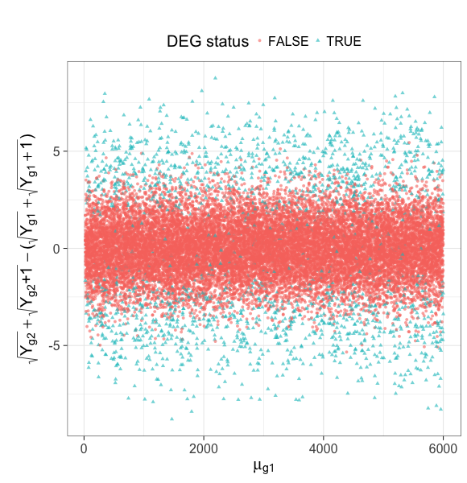
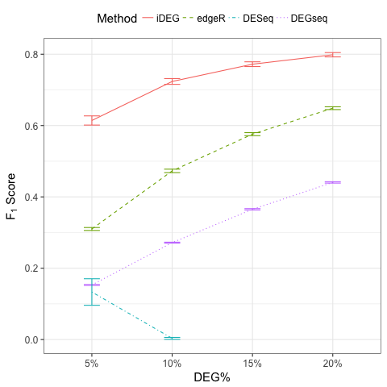

iDEG: a single-subject method for assessing gene differential expression from two transcriptomes of an individual
Qike Li
qike.li@gmail.com


Outline
- Background
- iDEG for Poisson distributed RNA-Seq data
- iDEG for negative binomial distributed RNA-Seq data
- Numerical studies
Background
- Precision Medicine
- Single-subject analysis
- Example RNA-Seq quantified mRNA expression data (Single-Subject)
- Main Challenges
- Our goal
- Existing Methods
- Our solution (iDEG)
Precision Medicine

Single-subject analysis

Single-subject analysis
Single-subject analysis studies one patient at a time, with the purpose of revealing the patient-specific disease mechanism for highly heterogeneous or rare diseases.
Example RNA-Seq quantified mRNA expression data (Single-Subject)
| Gene | Case expression | Baseline expression |
|---|---|---|
| A1BG | 92 | 72 |
| A1CF | 1 | 0 |
| A2BP1 | 0 | 2 |
| A2LD1 | 127 | 71 |
| A2ML1 | 773 | 12 |
| A2M | 11825 | 29385 |
| A4GALT | 871 | 891 |
| A4GNT | 1 | 5 |
| AAA1 | 0 | 0 |
| AAAS | 414 | 460 |
| … | … | … |


Main Challenges
Main Challenges in Single-subject analysis:
- There is NO within subject replicates.

Main Challenges
Main Challenges in Single-subject analysis:
- There is NO within subject replicates.
- For each gene, we have only two numbers two work with.
- Different genes have different variances.
Main Challenges
- Different genes have different variances.

Our goal
- How differentially expressed is a gene?
- An effect size of differential expression
- What is the uncertainty of the measurement?
- A probability
From a pair of transcriptomes collected from a single subject, can you identify differentially expressed genes?
Existing Methods
- Arbitrary cutoff
- for gene expression fold changes
- for gene expression absolute differences
DESeq1
DESeq assumes that most genes are nonDEG and estimates a mean-variance relationship from treating the two samples as if they were replicates.
1. Anders, S. et. al., 2010, Genome biology
Existing Methods
edgeR1
edgeR assigns an arbitrary value of the dispersion parameter to all genes and conducts a negative binomial exact test to compute p-values.
DEGSeq2
DEGseq models RNA-Seq data by binomial distribution and groups genes with similar expression level to estimate the variance in their expression counts. It is insufficient to model over-dispersed RNA-Seq data.
- Robinson, M. D. et. al., 2010, Bioinformatics
- Wang, L. et al., 2009, Bioinformatics
Our solution (iDEG)
- Bypass gene-level variance estimation: Transform RNA-Seq data such that all null genes have the same variance.
- Borrow strength across genes: model all genes in a single model
An example of Poisson distributed single subject RNA-Seq data
- Using Poisson distribution to model RNA-Seq data
- Simulate a single-subject dataset
- Variance Stabilizing Transformation (VST)
- Two-group mixture model
Using Poisson distribution to model RNA-Seq data
- While RNA-Seq data are usually modeled by negative binomial distribution to account for over-dispersion of expression counts, the over-dispersion may be negligible and Poisson distribution can fit the data well 1 when the two samples under comparison are processed with due caution in single-subject analysis.
- Moreover, the assumption of Poisson distribution facilitates a simpler testing procedure of iDEG.
1. Mortazavi, A., et al., 2008 Nature methods
Simulate a single-subject dataset
We simulate a pair of transcriptomes as an illustrative example
Simulate a single-subject dataset
Simulate a single-subject dataset

Variance Stabilizing Transformation (VST)
Freeman and Tukey1 developed a variance-stabilizing transformation (VST), \(h_{Pois}(\cdot)\), to transform Poisson data, such that the transformed data approximately follow a Normal distribution with the same variance regardless of their means. Namely, if \(Y_{gd} \sim Poisson(\mu_{gd})\), then
1. Freeman, M. F., et. al. 1950, The Annals of Mathematical Statistics
Variance Stabilizing Transformation (VST)
Variance Stabilizing Transformation (VST)

Two-group mixture model
First, we standardize \(D_{g}^{*}\),
Two-group mixture model
Suppose \(G\) genes are measured in the RNA-Seq experiment, each of the genes is either null or differentially expressed with prior probabilities \(\pi_{0}\) or \(\pi_{1} = 1-\pi_{0}\). And the density function of \(z_{g}\) is either \(f_{0}(z)\) or \(f_{1}(z)\).
The marginal mixture density is:
Two-group mixture model
The local false positive rate, \(fdr\), is the Bayes posterior probability that a gene \(g\) is a null gene given \(z_{g}\):
Two-group mixture model
\(f_{0}\) corresponds to a empirical null distribution.
In large-scale simultaneous hypothesis testing, the theoretical null may be deficient due to various reasons:
- correlation across genes
- unobserved covariates (e.g. gender, age, smoking status, etc.)
- or failed mathematical assumptions (e.g. asymptotic approximation).
Fortunately, in large-scale simultaneous testing, the parallel structure allows the estimation of an empirical null distribution, via empirical Bayes, from the own data of the study.
iDEG for negative binomial distributed RNA-Seq data
- Model RNA-Seq data with negative binomial distribution
- VST for negative binomial distribution
- Assumptions and approximation
- Estimate \(\scriptsize{\delta_g}\)
Model RNA-Seq data with negative binomial distribution
Parameter \(\delta_{g}\) in negative binomial distribution accounts for the overdispersion.
VST for negative binomial distribution
Assumptions and approximation
- We assume \(\delta_{g1} = \delta_{g2} = \delta_{g}\) and \(\delta_{g}\) is a smooth function of the expression mean \(\mu_{g}\). Consequently, genes with the same \(\mu_{g}\) follow the same distribution.
- We make an approximation by pooling genes with close expression means to estimate \(\delta_{g}\). Specifically,
- We assume the majority of the genes are null genes, and estimate \(\mu_{w}\) and \(\sigma^{2}_{w}\) for each window by outlier robust estimators, median and MAD, respectively.
Estimate \(\scriptsize{\delta_g}\)
With the estimated \(\hat{\mu}_{w}\) and \(\hat{\delta}_{w}\) from each window, we fit a smooth spline of \(\hat{\mu}_{w}\) and \(\hat{\delta}_{w}\) by minimizing the penalized residual sum of squares:
Then, we we estimate \(\delta_g\) for each gene,
Numerical studies
- Procedure
- Method evaluation
- Sensitivity Analysis
Procedure
- Step 1: Simulate one single-subject datasets (Poisson assumption or negative binomial assumption), which contains \(p \%\) DEG.
- Step 2: Conduct iDEG, DESeq, edgeR, and DEGseq.
- Step 3: Compute F1 score for each method,
- Step 4: Repeat Step1-Step3 for 1000 times
- Step 5: Calculate the arithmetic mean and standard deviation of the 1000 \(F_{1}\) resulted from each method.
- Step 6: Change the value of \(p\), repeat Step 1-Step 5
Method evaluation

Method evaluation
- Poisson case:
| DEG% | Method | Precision | Recall (TPR) | FPR | F1 | Predictions |
|---|---|---|---|---|---|---|
| 5% | iDEG | 0.987 (4.8e-03) | 0.879 (1.3e-02) | 0.001 (2.3e-04) | 0.929 (7.1e-03) | 890.46 (1.5e+01) |
| edgeR | 0.918 (8.2e-03) | 0.934 (8.3e-03) | 0.004 (4.8e-04) | 0.926 (6.2e-03) | 1017.52 (1.2e+01) | |
| DESeq | NaN (NA) | 0 (0.0e+00) | 0 (0.0e+00) | NaN (NA) | 0 (0.0e+00) | |
| 10% | iDEG | 0.988 (3.3e-03) | 0.904 (8.1e-03) | 0.001 (3.4e-04) | 0.944 (3.9e-03) | 1829.1 (2.0e+01) |
| edgeR | 0.923 (5.2e-03) | 0.95 (5.1e-03) | 0.009 (6.5e-04) | 0.936 (3.4e-03) | 2059.95 (1.7e+01) | |
| DESeq | NaN (NA) | 0 (0.0e+00) | 0 (0.0e+00) | NaN (NA) | 0 (0.0e+00) | |
| 15% | iDEG | 0.991 (2.4e-03) | 0.913 (7.5e-03) | 0.001 (4.0e-04) | 0.95 (3.6e-03) | 2764.26 (2.7e+01) |
| edgeR | 0.926 (5.0e-03) | 0.959 (3.4e-03) | 0.014 (1.0e-03) | 0.942 (3.0e-03) | 3105.66 (2.1e+01) | |
| DESeq | NaN (NA) | 0 (0.0e+00) | 0 (0.0e+00) | NaN (NA) | 0 (0.0e+00) | |
| 20% | iDEG | 0.991 (2.3e-03) | 0.921 (6.3e-03) | 0.002 (5.4e-04) | 0.955 (2.9e-03) | 3716.23 (3.1e+01) |
| edgeR | 0.93 (4.1e-03) | 0.963 (3.1e-03) | 0.018 (1.1e-03) | 0.946 (2.7e-03) | 4143.99 (2.2e+01) | |
| DESeq | NaN (NA) | 0 (0.0e+00) | 0 (0.0e+00) | NaN (NA) | 0 (0.0e+00) |
Although the Recall/TPR and number of precisions of iDEG are lower than edgeR, iDEG has high precision and low FPR across all percentages of DEG. These operating characteristics of iDEG may be preferable in large-scale inference, like RNA-Seq analysis, where investigators examines tens of thousands of genes in a high-throughput manner.
Method evaluation
- negative binomial case
| DEG.. | Method | Precision | Recall.TPR | FPR | F1 | Predictions |
|---|---|---|---|---|---|---|
| 5% | iDEG | 0.93 (1.6e-02) | 0.679 (2.5e-02) | 0.003 (7.2e-04) | 0.784 (1.5e-02) | 730.482 (3.4e+01) |
| edgeR | 0.39 (8.4e-03) | 0.948 (7.1e-03) | 0.078 (2.8e-03) | 0.552 (8.6e-03) | 2432.95 (5.4e+01) | |
| DESeq | 1 (1.3e-03) | 0.202 (3.5e-02) | 0 (1.4e-05) | 0.334 (4.8e-02) | 201.589 (3.5e+01) | |
| 10% | iDEG | 0.946 (9.8e-03) | 0.734 (2.1e-02) | 0.005 (9.8e-04) | 0.827 (1.2e-02) | 1552.089 (5.5e+01) |
| edgeR | 0.527 (7.7e-03) | 0.956 (4.7e-03) | 0.095 (2.9e-03) | 0.68 (6.6e-03) | 3628.589 (5.4e+01) | |
| DESeq | 1 (0.0e+00) | 0.001 (1.0e-03) | 0 (0.0e+00) | 0.003 (2.3e-03) | 1.107 (2.0e+00) | |
| 15% | iDEG | 0.955 (7.1e-03) | 0.767 (1.6e-02) | 0.006 (1.1e-03) | 0.851 (8.9e-03) | 2409.492 (6.4e+01) |
| edgeR | 0.608 (6.8e-03) | 0.96 (3.6e-03) | 0.109 (3.1e-03) | 0.745 (5.2e-03) | 4735.157 (5.5e+01) | |
| DESeq | 1 (0.0e+00) | 0 (4.8e-05) | 0 (0.0e+00) | 0.001 (1.1e-04) | 0.02 (1.4e-01) | |
| 20% | iDEG | 0.961 (5.8e-03) | 0.787 (1.4e-02) | 0.008 (1.3e-03) | 0.865 (7.5e-03) | 3275.416 (7.3e+01) |
| edgeR | 0.666 (5.7e-03) | 0.964 (3.0e-03) | 0.121 (3.1e-03) | 0.788 (4.1e-03) | 5791.611 (5.2e+01) | |
| DESeq | 1 (0.0e+00) | 0 (7.9e-06) | 0 (0.0e+00) | 0 (0.0e+00) | 0.001 (3.2e-02) |
Sensitivity Analysis
Our experience indicates that without making assumptions on RNA-Seq data, it is difficult to construct suitable statistical inferences for a single-subject dataset. Nonetheless we test the two main assumptions we make:
- The value of dispersion parameter is a function of expression mean.
- The majority of the genes are null genes.
Sensitivity Analysis
- Draw dispersion parameter \(\delta_{g}\) from a uniform distribution \(\text{unif}(0.001, 0.1)\).

Sensitivity Analysis
- Simulate single-subject datasets with a series of percentages of DEG.

Acknowledgements

Helen Hao Zhang

Yves A. Lussier

Haiquan Li

Joanne Berghout

Grant Schissler